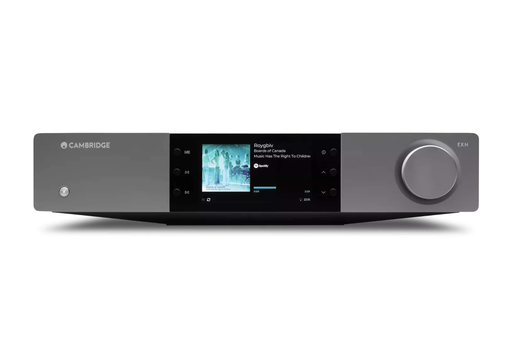
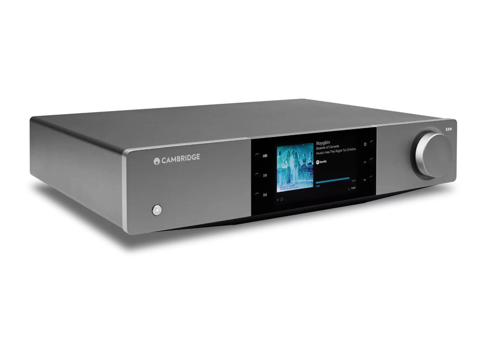
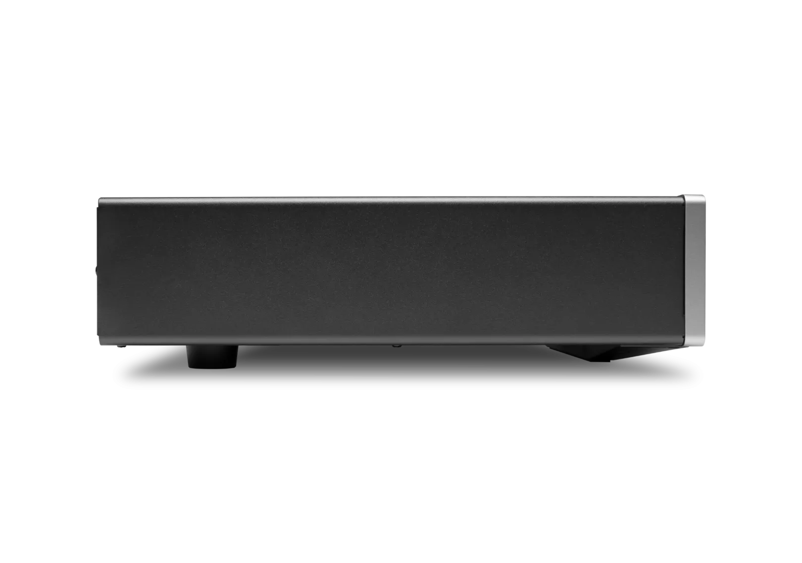
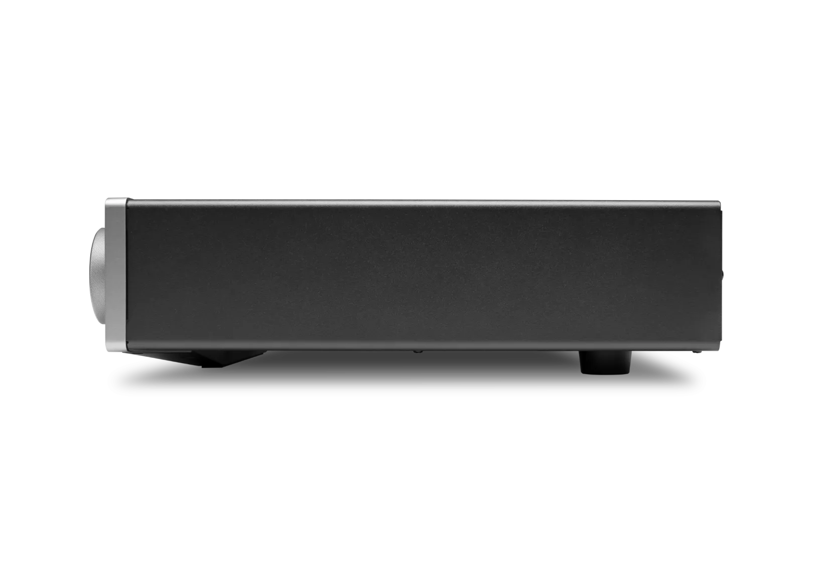
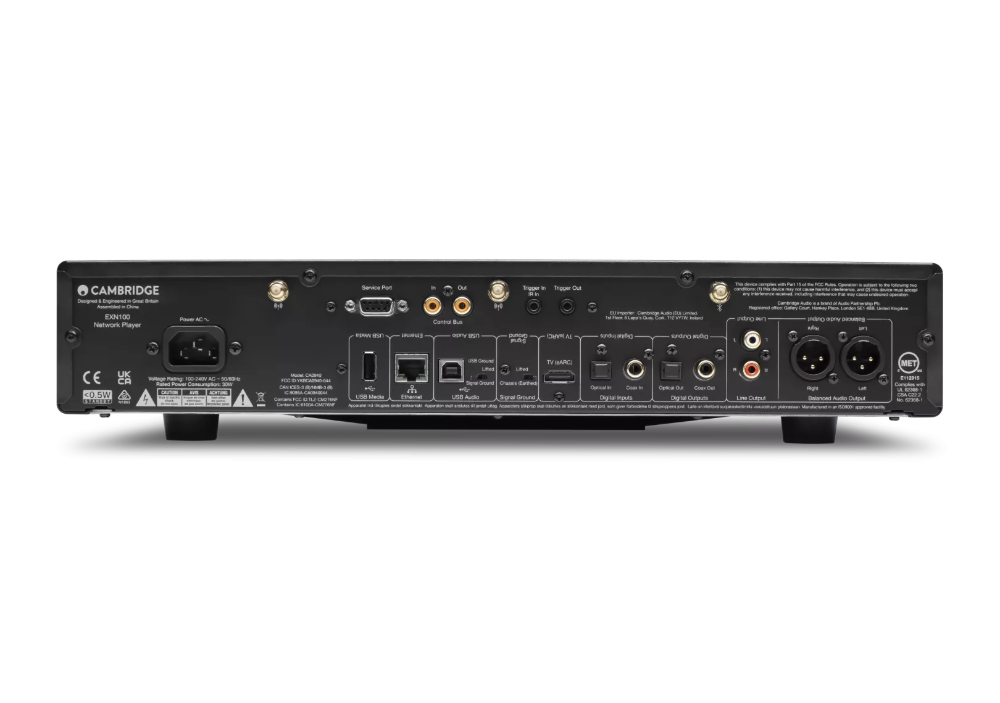
Network Player
EXN100
EXN100 is the music-streaming powerhouse of the EX range. Expertly refined in London, EX is a leap forward in performance, engineered to bring out the full potential of your music.
Lunar Grey
販売店を探す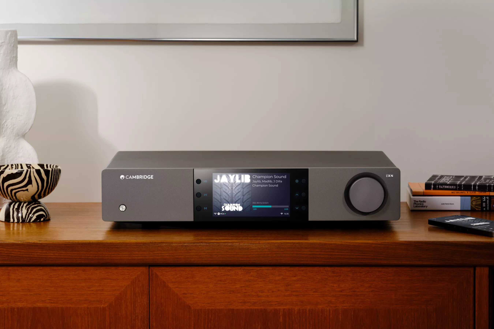
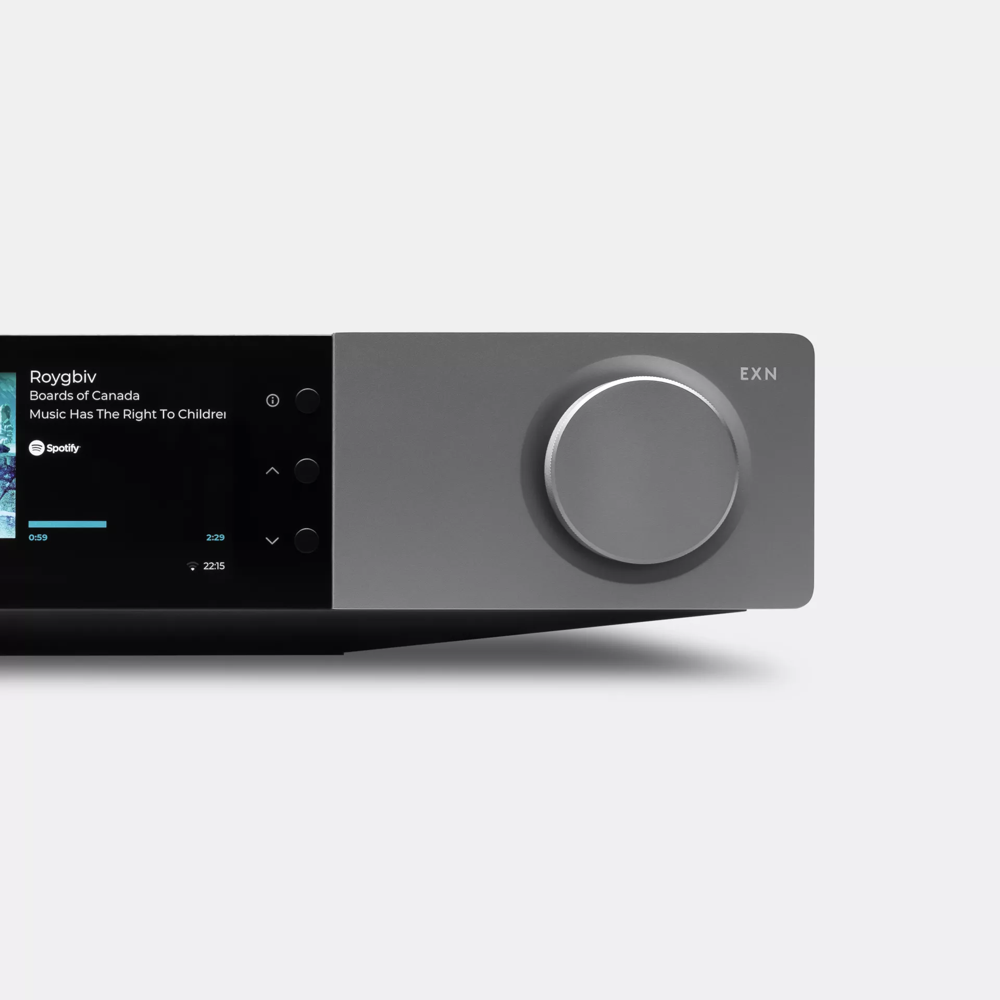

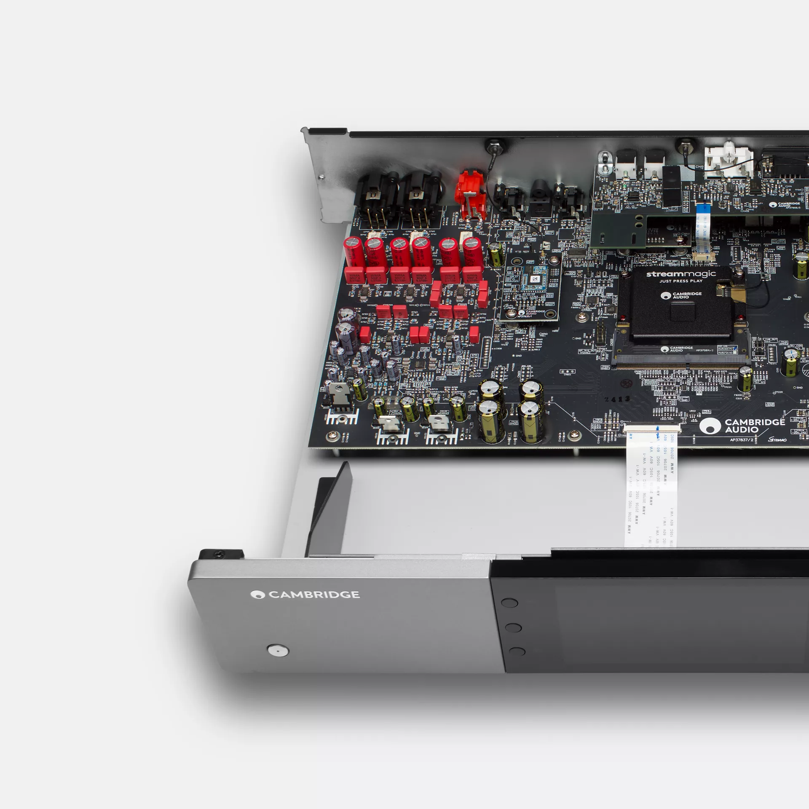
Next-level digital performance
We took the best of the CX series and pushed it further. By refining the ESS Reference DAC and meticulously fine-tuning every element of the signal path, EXN100 achieves a new benchmark in clarity, depth, and musicality.
Advanced streaming platform
Built on our fourth-generation StreamMagic platform, the EXN100 provides seamless access to high-resolution audio files, as well as MQA files. It's Roon Ready, with support for Spotify Connect, TIDAL Connect, Amazon Music, Qobuz, and more.
Precision engineering
EXN100 features significant enhancements in its post-DAC analogue stage, contributing to increased clarity, separation, and an expansive soundstage, ensuring a truly exceptional listening experience.
"Cambridge Audio has refined its streaming experience even further with the elevated, refined, features-packed EXN100"
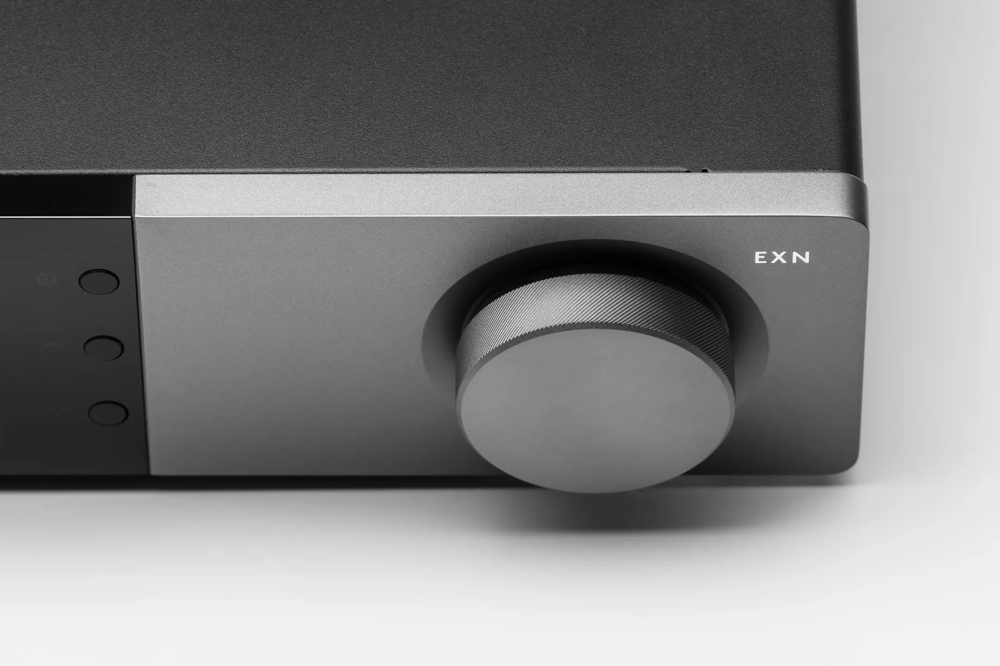
THE PINNACLE OF PERFORMANCE
EXN100 redefines high-fidelity streaming, combining cutting-edge digital engineering with meticulous analogue refinement to deliver breathtaking clarity, depth, and precision.
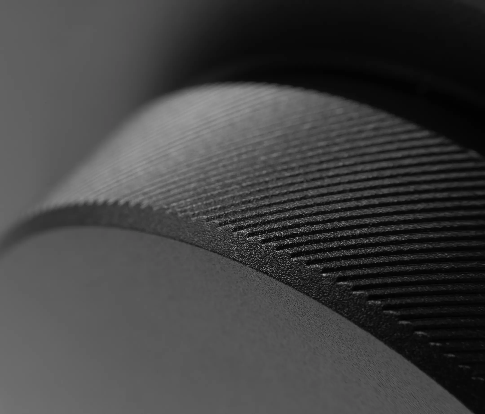
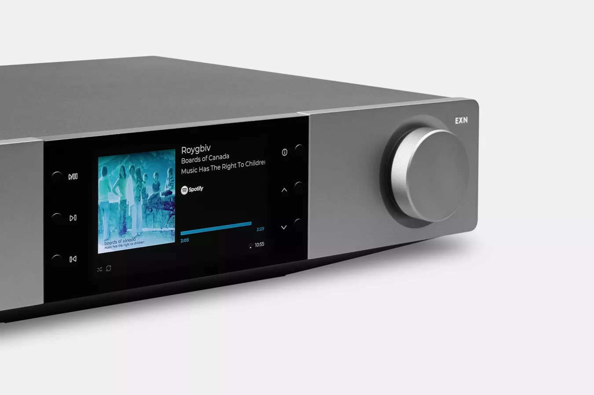
Minimal design, maximal performance
High-Resolution Audio Support
Experience music as the artist intended, with support for high-resolution audio formats up to 32-bit/784kHz PCM and DSD512. EXN100's precision-engineered DAC ensures every note is delivered with breathtaking accuracy and warmth.
Effortless control with StreamMagic
Navigate your library, discover new artists, control playback, and tweak the 7-band EQ with the StreamMagic app—giving you full command of your music from anywhere in your home.
Comprehensive Connectivity
Designed to fit seamlessly into your setup, EXN100 includes optical, coaxial, USB Type-B and USB Type-A ports for direct playback.
TV playback
HDMI eARC allows TV audio to integrate effortlessly, delivering superior sound for movies, games, and live performances.
High-Resolution Display
See album artwork and track details in stunning clarity on EXN100's large, high-resolution screen. Or switch to VU meters for a classic hi-fi aesthetic.
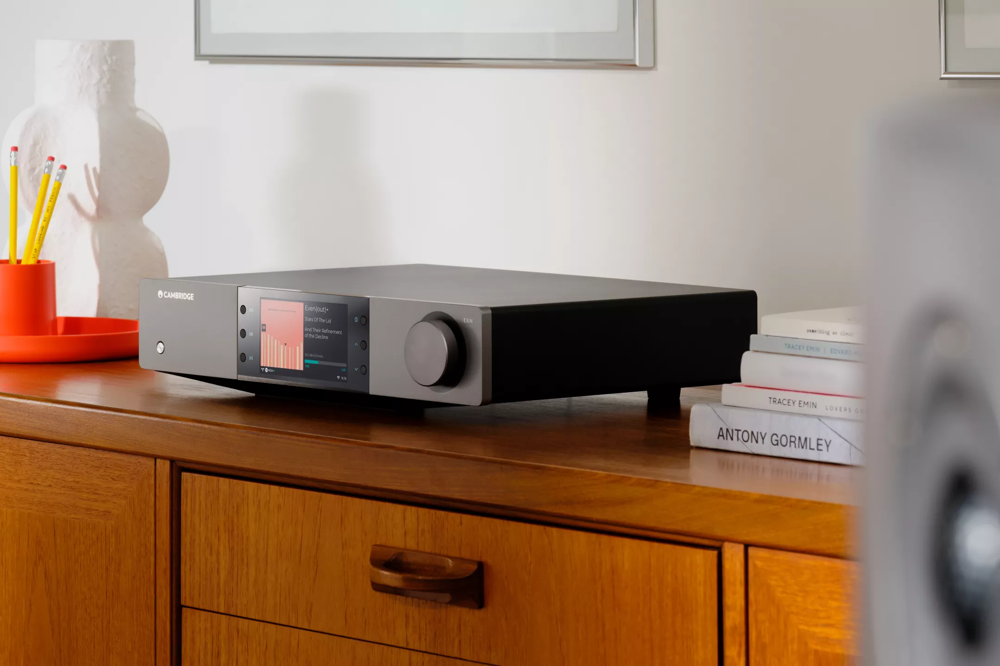
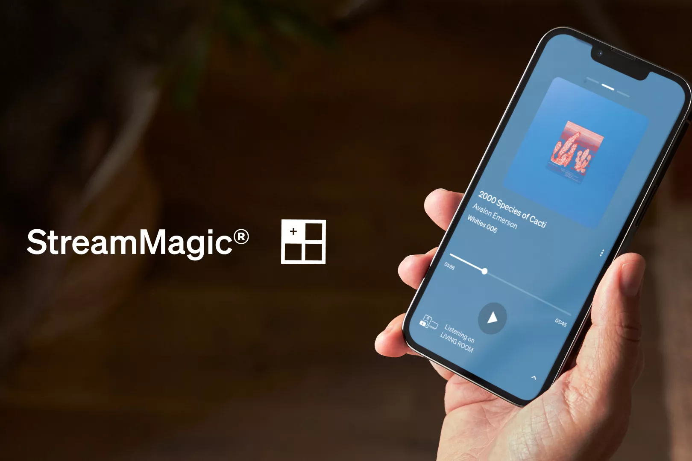
Multi-Room, Your Way
Let the music flow seamlessly from room to room by syncing multiple Cambridge Audio streaming devices around your home.
Built-in Google Cast, Apple AirPlay 2 and ROON compatibility gives enormous flexibility to build the perfect multi-room system.
Whether you group all your rooms into one big party system or want the music to follow you from one space to another, multi-room audio keeps the listening going.